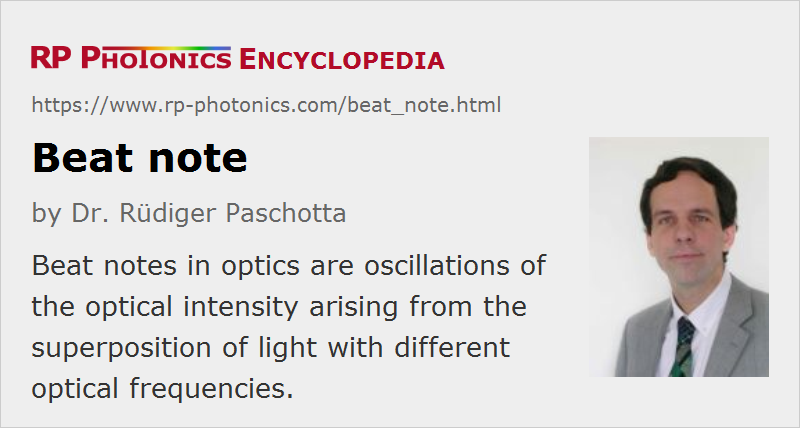

Beat Note
Definition: an oscillation of the optical intensity arising from the superposition of light with different optical frequencies
German: Schwebung
How to cite the article; suggest additional literature
Author: Dr. Rüdiger Paschotta
If two laser beams with different optical frequencies are superimposed on a photodetector measuring the optical intensity, a beat note – i.e., a signal with the difference of the optical frequencies – can usually be observed, if some conditions are met:
- The spatial distributions of the two light fields must overlap and must not be orthogonal. (For example, there may be no beat note if a laser beam with TEM00 and TEM01 modes excited hits a detector.) Somewhat clipping the beams, or even just some non-uniformity of the detector surface, can solve that problem.
- The polarization states also must not be orthogonal.
- The optical frequency difference must be within the bandwidth of the photodetector.
- Obviously, the wavelengths must be within the range where the photodetector is sensitive.
As a fast photodetector can have a bandwidth of tens of gigahertz (or even higher), optical frequency differences of that order of magnitude can be measured e.g. by analyzing the photodetector output with an electronic frequency counter or an electronic spectrum analyzer. An important application of this is in frequency metrology. For example, the frequency of some laser can be measured by recording a beat note between that laser and a close-by optical signal with known optical frequency. Such measurements are greatly facilitated by an optical frequency comb which can cover a wide range of well-defined optical frequencies, so that a sufficiently nearby reference frequency for a beat measurement can be found for any optical frequency in that large range.
The linewidth of a beat note of two free-running lasers with uncorrelated laser noise is larger than the linewidth of each laser separately. However, the beat linewidth can be smaller if the phase noise of both lasers is at least partially correlated. In an extreme case, one of the lasers may be phase-stabilized so as to obtain a constant beat frequency, as defined e.g. by some electronic oscillator. The linewidth of the beat note, measured against a clock in synchronism with the electronic oscillator, can then be exactly zero, if the phase difference exhibits only small stationary fluctuations.
Optical beat notes are essential for the technique of optical heterodyne detection.
Questions and Comments from Users
Here you can submit questions and comments. As far as they get accepted by the author, they will appear above this paragraph together with the author’s answer. The author will decide on acceptance based on certain criteria. Essentially, the issue must be of sufficiently broad interest.
Please do not enter personal data here; we would otherwise delete it soon. (See also our privacy declaration.) If you wish to receive personal feedback or consultancy from the author, please contact him e.g. via e-mail.
By submitting the information, you give your consent to the potential publication of your inputs on our website according to our rules. (If you later retract your consent, we will delete those inputs.) As your inputs are first reviewed by the author, they may be published with some delay.
See also: frequency metrology, optical frequency, photodetectors, optical heterodyne detection, The Photonics Spotlight 2008-07-26, The Photonics Spotlight 2009-07-29
and other articles in the category optical metrology
|  |
If you like this page, please share the link with your friends and colleagues, e.g. via social media:
These sharing buttons are implemented in a privacy-friendly way!